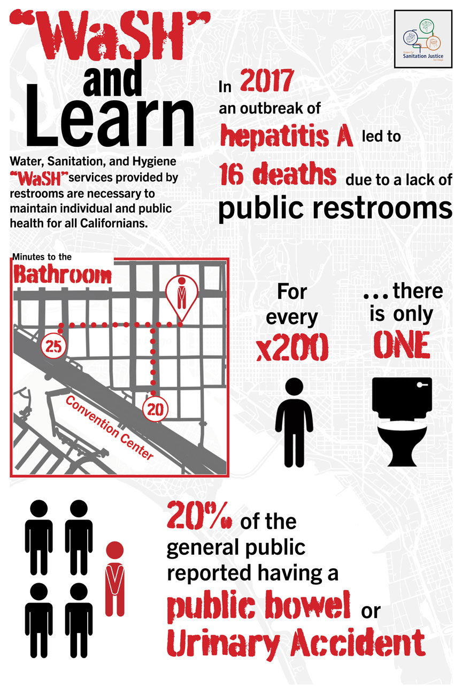

An infographic for the Project for Sanitation Justice

Challenge
The Project for Sanitation Justice had a lack of outreach which concisely communicates the pressing
need of public restrooms to the general public in an engaging way.
Process
The core message was formed through the needs of advocates and nonprofits.
Preexisting research conducted by the Project for Sanitation Justice team was analyzed to fit the intended message for public health advocacy.
Elements were created in Adobe Illustrator.
Repeated critiques and iterations refined the infographic.
Final deliverables were presented.
Outcome
Deliverables were presented to the Project for Sanitation Justice and the template has now been integrated into the outreach materials.
Analyzing Gaps in Outreach
Our research was presented often at city council meetings which were met with reservation from decisionmakers.
Specialist knowledge with an academic approach makes it difficult to see where information can matriculate into political affairs.
Advanced knowledge in public health was required for our community advocates to communicate demands to city council.
Increased Advocacy
People who may lack in-depth knowledge will be able to advocate for needed city infrastructure.
Quick Communication
Easy-to-glance information aided by visuals allowed for quick understanding of materials.
Serves Universal Audiences
The information is highly impactful for decisionmakers and advocates.
Keeping Our Points Simple
Large amounts of human research data which highlighted our problems carried both useful information and potential problems.
Identifiable information needed to be sanitized for HIPAA compliance.
By creating personas which informed our points we identified key overlaps that would be used to inform important points.
Impact
The infographic was successfully added into the Project for Sanitation Justice's outreach strategy.
The organization is able to rapidly communicate to targeted demographics.
Information is now more easily digested by adopters and policymakers for easier and quicker decisionmaking.
Elements that require updates can easily be swapped out with up-to-date information.
Key Takeaways
Human Research
Through the analyzation of transcripts I was able to extract key points which were deeply relevant to our target outcomes advancing public health.
Data Visualization
Showing complex information in a universally accessible way was a challenge which enhanced our understanding of the issue of public sanitation.